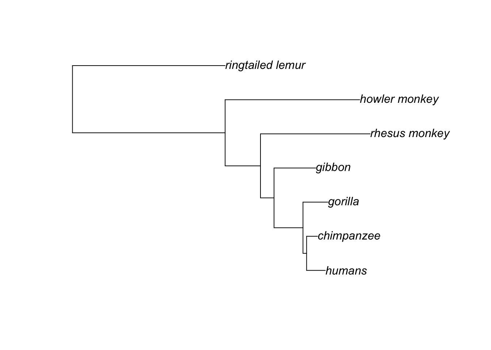
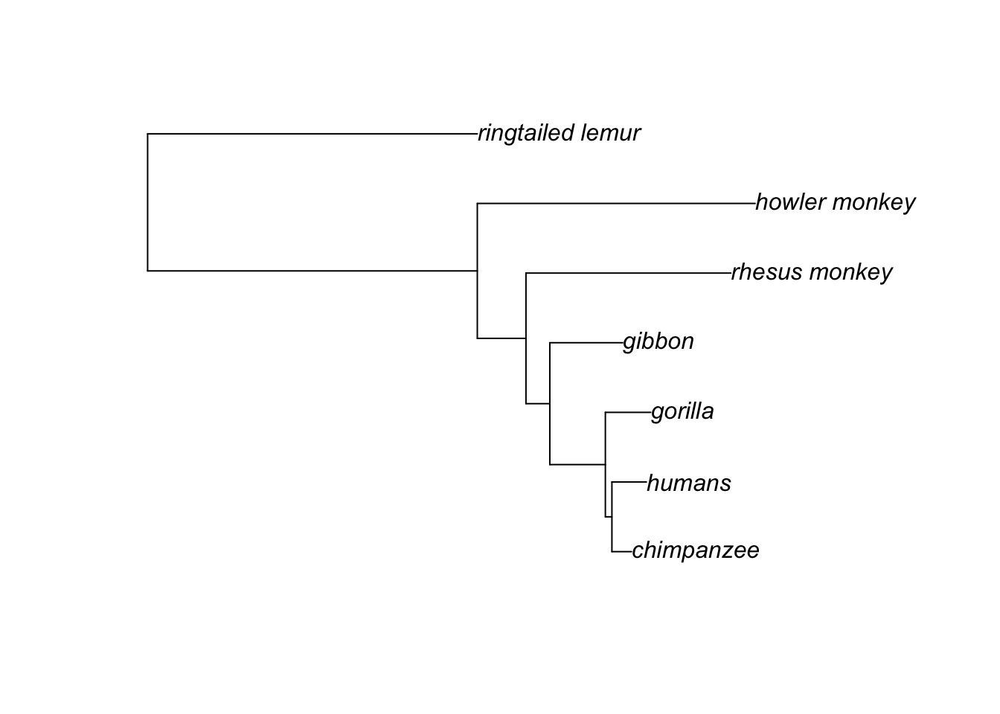

library(phangorn)Loading required package: apesource("~/Documents/phylo/Exercise10/reRoot.R")library(phangorn)Loading required package: apesource("~/Documents/phylo/Exercise10/reRoot.R")primates.dna <- read.dna("~/Documents/phylo/Exercise5/data/primates.raw.aligned.fasta",
format="fasta")
primates.dna7 DNA sequences in binary format stored in a matrix.
All sequences of same length: 1046
Labels:
ringtailed_lemur
howler_monkey
rhesus_monkey
gibbon
gorilla
humans
...
Base composition:
a c g t
0.329 0.321 0.088 0.261
(Total: 7.32 kb)primates.phyDat <- phyDat(primates.dna,
type = "DNA",
levels = NULL)
dm <- dist.dna(primates.dna, model="JC69")
treeNJ <- NJ(dm)
fitJC = pml(treeNJ, data=primates.phyDat)
fitJCbranch = optim.pml(fitJC, model="JC") optimize edge weights: -5510.551 --> -5496.181
optimize edge weights: -5496.181 --> -5496.181
optimize edge weights: -5496.181 --> -5496.181 fitJCbranchmodel: JC
loglikelihood: -5496.181
unconstrained loglikelihood: -4382.048
Rate matrix:
a c g t
a 0 1 1 1
c 1 0 1 1
g 1 1 0 1
t 1 1 1 0
Base frequencies:
a c g t
0.25 0.25 0.25 0.25 AIC_JC <- -2* fitJCbranch$logLik + (2*11)
AIC_JC[1] 11014.36fitF81branch = optim.pml(fitJCbranch, model="F81") optimize edge weights: -5329.242 --> -5328.829
optimize edge weights: -5328.829 --> -5328.829
optimize edge weights: -5328.829 --> -5328.829 AIC_F81 <- -2* fitF81branch$logLik + (2*14)
AIC_F81[1] 10685.66fitGTRbranch = optim.pml(fitF81branch, model="GTR") optimize edge weights: -5328.829 --> -5328.829
optimize rate matrix: -5328.829 --> -5098.226
optimize edge weights: -5098.226 --> -5095.633
optimize rate matrix: -5095.633 --> -5095.525
optimize edge weights: -5095.525 --> -5095.52
optimize rate matrix: -5095.52 --> -5095.519
optimize edge weights: -5095.519 --> -5095.519
optimize rate matrix: -5095.519 --> -5095.519
optimize edge weights: -5095.519 --> -5095.519 fitGTRbranchmodel: GTR
loglikelihood: -5095.519
unconstrained loglikelihood: -4382.048
Rate matrix:
a c g t
a 0.000000 6.166402 17.337773 2.931153
c 6.166402 0.000000 2.335849 17.628568
g 17.337773 2.335849 0.000000 1.000000
t 2.931153 17.628568 1.000000 0.000000
Base frequencies:
a c g t
0.32944886 0.32122292 0.08829175 0.26103647 AIC_GTR <- -2* fitGTRbranch$logLik + (2*19)
AIC_GTR[1] 10229.04Question 1: The best model has the lowest AIC.
Of these, the lowest is the GTR model, making it the best.
fitGTR <- update(fitGTRbranch, k=4)
fitGTRbranchG = optim.pml(fitGTR, model="GTR", optGamma=T) optimize edge weights: -4999.284 --> -4985.491
optimize rate matrix: -4985.491 --> -4977.833
optimize shape parameter: -4977.833 --> -4964.218
optimize edge weights: -4964.218 --> -4957.434
optimize rate matrix: -4957.434 --> -4953.573
optimize shape parameter: -4953.573 --> -4951.702
optimize edge weights: -4951.702 --> -4949.392
optimize rate matrix: -4949.392 --> -4948.174
optimize shape parameter: -4948.174 --> -4947.465
optimize edge weights: -4947.465 --> -4946.554
optimize rate matrix: -4946.554 --> -4946.034
optimize shape parameter: -4946.034 --> -4945.733
optimize edge weights: -4945.733 --> -4945.319
optimize rate matrix: -4945.319 --> -4945.076
optimize shape parameter: -4945.076 --> -4944.935
optimize edge weights: -4944.935 --> -4944.736
optimize rate matrix: -4944.736 --> -4944.616
optimize shape parameter: -4944.616 --> -4944.546
optimize edge weights: -4944.546 --> -4944.444
optimize rate matrix: -4944.444 --> -4944.382
optimize shape parameter: -4944.382 --> -4944.347
optimize edge weights: -4944.347 --> -4944.294
optimize rate matrix: -4944.294 --> -4944.262
optimize shape parameter: -4944.262 --> -4944.244
optimize edge weights: -4944.244 --> -4944.216
optimize rate matrix: -4944.216 --> -4944.199
optimize shape parameter: -4944.199 --> -4944.19
optimize edge weights: -4944.19 --> -4944.176
optimize rate matrix: -4944.176 --> -4944.167
optimize shape parameter: -4944.167 --> -4944.162
optimize edge weights: -4944.162 --> -4944.154
optimize rate matrix: -4944.154 --> -4944.15
optimize shape parameter: -4944.15 --> -4944.147
optimize edge weights: -4944.147 --> -4944.143 fitGTRbranchGmodel: GTR+G(4)
loglikelihood: -4944.143
unconstrained loglikelihood: -4382.048
Model of rate heterogeneity: Discrete gamma model
Number of rate categories: 4
Shape parameter: 0.3735325
Rate Proportion
1 0.01308855 0.25
2 0.16172562 0.25
3 0.70097415 0.25
4 3.12421168 0.25
Rate matrix:
a c g t
a 0.000000 2.0568742 17.5711216 1.016612
c 2.056874 0.0000000 0.8021195 13.505358
g 17.571122 0.8021195 0.0000000 1.000000
t 1.016612 13.5053581 1.0000000 0.000000
Base frequencies:
a c g t
0.32944886 0.32122292 0.08829175 0.26103647 Question 2: The log likelihood of this model is -4944.1426628. Compare this to the log likelihood of the JC model: -5496.1811587, the F81 model: -5328.8293725, and the GTR model: -5095.5192909. The gamma GTR model has the best (lowest) log likelihood.
rooted.tree <- reroot.tree(fitGTRbranchG$tree, "ringtailed_lemur")
plot(rooted.tree)

Question 3: The arrangement of species is mostly the same, there’s only a small difference in the lengths of some branches (such as the chimpanzee/human branch).
AIC_GTRG <- -2* fitGTRbranchG$logLik + (2*20)
AIC_GTRG[1] 9928.285Question 4: Yes
mt <- modelTest(primates.phyDat, model="all") Model df logLik AIC BIC
JC 11 -5496.181 11014.36 11068.84
JC+I 12 -5416.754 10857.51 10916.94
JC+G(4) 12 -5418.998 10862 10921.43
JC+G(4)+I 13 -5416.886 10859.77 10924.16
F81 14 -5328.829 10685.66 10755
F81+I 15 -5226.856 10483.71 10558
F81+G(4) 15 -5226.356 10482.71 10557
F81+G(4)+I 16 -5224.896 10481.79 10561.03
K80 12 -5323.311 10670.62 10730.05
K80+I 13 -5221.048 10468.1 10532.48
K80+G(4) 13 -5213.058 10452.12 10516.5
K80+G(4)+I 14 -5212.604 10453.21 10522.55
HKY 15 -5120.99 10271.98 10346.27
HKY+I 16 -4960.509 9953.017 10032.26
HKY+G(4) 16 -4948.607 9929.213 10008.46
HKY+G(4)+I 17 -4944.322 9922.645 10006.84
TrNe 13 -5281.564 10589.13 10653.51
TrNe+I 14 -5176.895 10381.79 10451.13
TrNe+G(4) 14 -5174.584 10377.17 10446.51
TrNe+G(4)+I 15 -5171.055 10372.11 10446.4
TrN 16 -5120.97 10273.94 10353.18
TrN+I 17 -4958.208 9950.416 10034.61
TrN+G(4) 17 -4946.994 9927.988 10012.18
TrN+G(4)+I 18 -4941.606 9919.213 10008.36
TPM1 13 -5305.454 10636.91 10701.29
TPM1+I 14 -5202.961 10433.92 10503.26
TPM1+G(4) 14 -5201.154 10430.31 10499.65
TPM1+G(4)+I 15 -5199.12 10428.24 10502.53
K81 13 -5305.454 10636.91 10701.29
K81+I 14 -5202.961 10433.92 10503.26
K81+G(4) 14 -5201.154 10430.31 10499.65
K81+G(4)+I 15 -5199.12 10428.24 10502.53
TPM1u 16 -5111.142 10254.28 10333.53
TPM1u+I 17 -4957.487 9948.975 10033.17
TPM1u+G(4) 17 -4946.533 9927.066 10011.26
TPM1u+G(4)+I 18 -4942.271 9920.541 10009.69
TPM2 13 -5253.008 10532.02 10596.4
TPM2+I 14 -5158.249 10344.5 10413.84
TPM2+G(4) 14 -5149.615 10327.23 10396.57
TPM2+G(4)+I 15 -5149.462 10328.92 10403.22
TPM2u 16 -5108.28 10248.56 10327.8
TPM2u+I 17 -4957.313 9948.627 10032.82
TPM2u+G(4) 17 -4947.223 9928.446 10012.64
TPM2u+G(4)+I 18 -4943.086 9922.171 10011.32
TPM3 13 -5307.027 10640.05 10704.44
TPM3+I 14 -5213.573 10455.15 10524.48
TPM3+G(4) 14 -5207.854 10443.71 10513.05
TPM3+G(4)+I 15 -5207.071 10444.14 10518.43
TPM3u 16 -5108.236 10248.47 10327.72
TPM3u+I 17 -4957.39 9948.781 10032.98
TPM3u+G(4) 17 -4946.96 9927.919 10012.12
TPM3u+G(4)+I 18 -4942.67 9921.339 10010.49
TIM1e 14 -5263.716 10555.43 10624.77
TIM1e+I 15 -5159.405 10348.81 10423.1
TIM1e+G(4) 15 -5161.171 10352.34 10426.63
TIM1e+G(4)+I 16 -5155.659 10343.32 10422.56
TIM1 17 -5111.129 10256.26 10340.45
TIM1+I 18 -4955.042 9946.083 10035.23
TIM1+G(4) 18 -4944.999 9925.998 10015.15
TIM1+G(4)+I 19 -4939.588 9917.176 10011.28
TIM2e 14 -5210.005 10448.01 10517.35
TIM2e+I 15 -5111.451 10252.9 10327.19
TIM2e+G(4) 15 -5111.075 10252.15 10326.44
TIM2e+G(4)+I 16 -5107.542 10247.08 10326.33
TIM2 17 -5108.272 10250.54 10334.74
TIM2+I 18 -4955.381 9946.762 10035.91
TIM2+G(4) 18 -4946.182 9928.363 10017.51
TIM2+G(4)+I 19 -4941.1 9920.2 10014.3
TIM3e 14 -5265.263 10558.53 10627.87
TIM3e+I 15 -5171.034 10372.07 10446.36
TIM3e+G(4) 15 -5168.717 10367.43 10441.72
TIM3e+G(4)+I 16 -5165.449 10362.9 10442.14
TIM3 17 -5108.207 10250.41 10334.61
TIM3+I 18 -4954.794 9945.589 10034.74
TIM3+G(4) 18 -4945.324 9926.648 10015.8
TIM3+G(4)+I 19 -4939.859 9917.717 10011.82
TVMe 15 -5234.642 10499.28 10573.57
TVMe+I 16 -5146.501 10325 10404.25
TVMe+G(4) 16 -5141.583 10315.17 10394.41
TVMe+G(4)+I 17 -5140.92 10315.84 10400.04
TVM 18 -5095.533 10227.07 10316.21
TVM+I 19 -4953.952 9945.904 10040.01
TVM+G(4) 19 -4945.188 9928.375 10022.48
TVM+G(4)+I 20 -4941.096 9922.192 10021.25
SYM 16 -5191.59 10415.18 10494.42
SYM+I 17 -5101.912 10237.82 10322.02
SYM+G(4) 17 -5102.729 10239.46 10323.65
SYM+G(4)+I 18 -5098.762 10233.52 10322.67
GTR 19 -5095.519 10229.04 10323.14
GTR+I 20 -4951.752 9943.503 10042.56
GTR+G(4) 20 -4944.143 9928.285 10027.34
GTR+G(4)+I 21 -4939.047 9920.094 10024.1 mt Model df logLik AIC AICw AICc AICcw
1 JC 11 -5496.181 11014.362 1.769368e-239 11014.618 2.244818e-239
2 JC+I 12 -5416.754 10857.509 2.033254e-205 10857.811 2.520059e-205
3 JC+G(4) 12 -5418.998 10861.995 2.157376e-206 10862.297 2.673899e-206
4 JC+G(4)+I 13 -5416.886 10859.772 6.558236e-206 10860.124 7.925035e-206
5 F81 14 -5328.829 10685.659 4.215917e-168 10686.066 4.957209e-168
6 F81+I 15 -5226.856 10483.712 2.999235e-124 10484.178 3.424684e-124
7 F81+G(4) 15 -5226.356 10482.711 4.947887e-124 10483.177 5.649757e-124
8 F81+G(4)+I 16 -5224.896 10481.791 7.837568e-124 10482.320 8.673356e-124
9 K80 12 -5323.311 10670.622 7.765094e-165 10670.924 9.624228e-165
10 K80+I 13 -5221.048 10468.097 7.376966e-121 10468.449 8.914396e-121
11 K80+G(4) 13 -5213.058 10452.115 2.178540e-117 10452.468 2.632569e-117
12 K80+G(4)+I 14 -5212.604 10453.207 1.262116e-117 10453.615 1.484036e-117
13 HKY 15 -5120.990 10271.980 2.845280e-78 10272.446 3.248890e-78
14 HKY+I 16 -4960.509 9953.017 5.199290e-09 9953.546 5.753736e-09
15 HKY+G(4) 16 -4948.607 9929.213 7.673438e-04 9929.742 8.491724e-04
16 HKY+G(4)+I 17 -4944.322 9922.645 2.047621e-02 9923.240 2.191694e-02
17 TrNe 13 -5281.564 10589.128 3.858001e-147 10589.480 4.662045e-147
18 TrNe+I 14 -5176.895 10381.791 4.064127e-102 10382.198 4.778730e-102
19 TrNe+G(4) 14 -5174.584 10377.167 4.101966e-101 10377.575 4.823222e-101
20 TrNe+G(4)+I 15 -5171.055 10372.111 5.140379e-100 10372.577 5.869555e-100
21 TrN 16 -5120.970 10273.940 1.067799e-78 10274.469 1.181668e-78
22 TrN+I 17 -4958.208 9950.416 1.908767e-08 9951.012 2.043071e-08
23 TrN+G(4) 17 -4946.994 9927.988 1.416028e-03 9928.583 1.515661e-03
24 TrN+G(4)+I 18 -4941.606 9919.213 1.139089e-01 9919.879 1.176897e-01
25 TPM1 13 -5305.454 10636.908 1.625707e-157 10637.260 1.964519e-157
26 TPM1+I 14 -5202.961 10433.921 1.945190e-113 10434.329 2.287217e-113
27 TPM1+G(4) 14 -5201.154 10430.308 1.184977e-112 10430.715 1.393334e-112
28 TPM1+G(4)+I 15 -5199.120 10428.239 3.332936e-112 10428.705 3.805721e-112
29 K81 13 -5305.454 10636.908 1.625707e-157 10637.260 1.964519e-157
30 K81+I 14 -5202.961 10433.921 1.945190e-113 10434.329 2.287217e-113
31 K81+G(4) 14 -5201.154 10430.308 1.184977e-112 10430.715 1.393334e-112
32 K81+G(4)+I 15 -5199.120 10428.239 3.332936e-112 10428.705 3.805721e-112
33 TPM1u 16 -5111.142 10254.284 1.980264e-74 10254.813 2.191437e-74
34 TPM1u+I 17 -4957.487 9948.975 3.924071e-08 9949.570 4.200173e-08
35 TPM1u+G(4) 17 -4946.533 9927.066 2.245022e-03 9927.661 2.402985e-03
36 TPM1u+G(4)+I 18 -4942.271 9920.541 5.861705e-02 9921.207 6.056265e-02
37 TPM2 13 -5253.008 10532.015 9.731379e-135 10532.368 1.175949e-134
38 TPM2+I 14 -5158.249 10344.499 5.091244e-94 10344.906 5.986447e-94
39 TPM2+G(4) 14 -5149.615 10327.229 2.863474e-90 10327.637 3.366964e-90
40 TPM2+G(4)+I 15 -5149.462 10328.924 1.226923e-90 10329.390 1.400965e-90
41 TPM2u 16 -5108.280 10248.561 3.463662e-73 10249.089 3.833023e-73
42 TPM2u+I 17 -4957.313 9948.627 4.670942e-08 9949.222 4.999595e-08
43 TPM2u+G(4) 17 -4947.223 9928.446 1.126038e-03 9929.041 1.205267e-03
44 TPM2u+G(4)+I 18 -4943.086 9922.171 2.594728e-02 9922.837 2.680851e-02
45 TPM3 13 -5307.027 10640.054 3.371211e-158 10640.407 4.073803e-158
46 TPM3+I 14 -5213.573 10455.145 4.789382e-118 10455.553 5.631508e-118
47 TPM3+G(4) 14 -5207.854 10443.707 1.458939e-115 10444.114 1.715466e-115
48 TPM3+G(4)+I 15 -5207.071 10444.141 1.174200e-115 10444.607 1.340763e-115
49 TPM3u 16 -5108.236 10248.473 3.619234e-73 10249.001 4.005185e-73
50 TPM3u+I 17 -4957.390 9948.781 4.323783e-08 9949.376 4.628010e-08
51 TPM3u+G(4) 17 -4946.960 9927.919 1.465266e-03 9928.515 1.568364e-03
52 TPM3u+G(4)+I 18 -4942.670 9921.339 3.933053e-02 9922.005 4.063598e-02
53 TIM1e 14 -5263.716 10555.432 8.003260e-140 10555.839 9.410489e-140
54 TIM1e+I 15 -5159.405 10348.810 5.898344e-95 10349.276 6.735039e-95
55 TIM1e+G(4) 15 -5161.171 10352.343 1.008172e-95 10352.809 1.151184e-95
56 TIM1e+G(4)+I 16 -5155.659 10343.318 9.189475e-94 10343.846 1.016943e-93
57 TIM1 17 -5111.129 10256.258 7.381852e-75 10256.853 7.901248e-75
58 TIM1+I 18 -4955.042 9946.083 1.666132e-07 9946.749 1.721434e-07
59 TIM1+G(4) 18 -4944.999 9925.998 3.830291e-03 9926.664 3.957425e-03
60 TIM1+G(4)+I 19 -4939.588 9917.176 3.154306e-01 9917.916 3.139488e-01
61 TIM2e 14 -5210.005 10448.010 1.697233e-116 10448.417 1.995661e-116
62 TIM2e+I 15 -5111.451 10252.903 3.950349e-74 10253.369 4.510716e-74
63 TIM2e+G(4) 15 -5111.075 10252.150 5.756386e-74 10252.616 6.572943e-74
64 TIM2e+G(4)+I 16 -5107.542 10247.085 7.244411e-73 10247.614 8.016946e-73
65 TIM2 17 -5108.272 10250.545 1.284459e-73 10251.140 1.374835e-73
66 TIM2+I 18 -4955.381 9946.762 1.186730e-07 9947.428 1.226119e-07
67 TIM2+G(4) 18 -4946.182 9928.363 1.173644e-03 9929.029 1.212599e-03
68 TIM2+G(4)+I 19 -4941.100 9920.200 6.953074e-02 9920.941 6.920411e-02
69 TIM3e 14 -5265.263 10558.527 1.702946e-140 10558.934 2.002378e-140
70 TIM3e+I 15 -5171.034 10372.068 5.252000e-100 10372.534 5.997009e-100
71 TIM3e+G(4) 15 -5168.717 10367.433 5.329164e-99 10367.899 6.085119e-99
72 TIM3e+G(4)+I 16 -5165.449 10362.897 5.148054e-98 10363.426 5.697036e-98
73 TIM3 17 -5108.207 10250.414 1.370881e-73 10251.010 1.467338e-73
74 TIM3+I 18 -4954.794 9945.589 2.133373e-07 9946.255 2.204184e-07
75 TIM3+G(4) 18 -4945.324 9926.648 2.767217e-03 9927.314 2.859066e-03
76 TIM3+G(4)+I 19 -4939.859 9917.717 2.405772e-01 9918.458 2.394470e-01
77 TVMe 15 -5234.642 10499.284 1.246445e-127 10499.750 1.423257e-127
78 TVMe+I 16 -5146.501 10325.003 8.716450e-90 10325.531 9.645962e-90
79 TVMe+G(4) 16 -5141.583 10315.167 1.191706e-87 10315.696 1.318788e-87
80 TVMe+G(4)+I 17 -5140.920 10315.841 8.509345e-88 10316.436 9.108073e-88
81 TVM 18 -5095.533 10227.066 1.611136e-68 10227.732 1.664612e-68
82 TVM+I 19 -4953.952 9945.904 1.822050e-07 9946.645 1.813490e-07
83 TVM+G(4) 19 -4945.188 9928.375 1.166590e-03 9929.116 1.161110e-03
84 TVM+G(4)+I 20 -4941.096 9922.192 2.568275e-02 9923.011 2.457489e-02
85 SYM 16 -5191.590 10415.181 2.282811e-109 10415.709 2.526247e-109
86 SYM+I 17 -5101.912 10237.823 7.432209e-71 10238.419 7.955149e-71
87 SYM+G(4) 17 -5102.729 10239.457 3.282960e-71 10240.053 3.513953e-71
88 SYM+G(4)+I 18 -5098.762 10233.524 6.378955e-70 10234.190 6.590684e-70
89 GTR 19 -5095.519 10229.039 6.007593e-69 10229.779 5.979371e-69
90 GTR+I 20 -4951.752 9943.503 6.051852e-07 9944.323 5.790796e-07
91 GTR+G(4) 20 -4944.143 9928.285 1.220398e-03 9929.105 1.167755e-03
92 GTR+G(4)+I 21 -4939.047 9920.094 7.331948e-02 9920.996 6.731049e-02
BIC
1 11068.84
2 10916.94
3 10921.43
4 10924.16
5 10755.00
6 10558.00
7 10557.00
8 10561.03
9 10730.05
10 10532.48
11 10516.50
12 10522.55
13 10346.27
14 10032.26
15 10008.46
16 10006.84
17 10653.51
18 10451.13
19 10446.51
20 10446.40
21 10353.18
22 10034.61
23 10012.18
24 10008.36
25 10701.29
26 10503.26
27 10499.65
28 10502.53
29 10701.29
30 10503.26
31 10499.65
32 10502.53
33 10333.53
34 10033.17
35 10011.26
36 10009.69
37 10596.40
38 10413.84
39 10396.57
40 10403.22
41 10327.80
42 10032.82
43 10012.64
44 10011.32
45 10704.44
46 10524.48
47 10513.05
48 10518.43
49 10327.72
50 10032.98
51 10012.12
52 10010.49
53 10624.77
54 10423.10
55 10426.63
56 10422.56
57 10340.45
58 10035.23
59 10015.15
60 10011.28
61 10517.35
62 10327.19
63 10326.44
64 10326.33
65 10334.74
66 10035.91
67 10017.51
68 10014.30
69 10627.87
70 10446.36
71 10441.72
72 10442.14
73 10334.61
74 10034.74
75 10015.80
76 10011.82
77 10573.57
78 10404.25
79 10394.41
80 10400.04
81 10316.21
82 10040.01
83 10022.48
84 10021.25
85 10494.42
86 10322.02
87 10323.65
88 10322.67
89 10323.14
90 10042.56
91 10027.34
92 10024.10Question 5: The first row is the JC model, and the log likelihood and AIC are the same as calculated above.
best.model <- mt[which.min(mt$AIC),]
best.model Model df logLik AIC AICw AICc AICcw BIC
60 TIM1+G(4)+I 19 -4939.588 9917.176 0.3154306 9917.916 0.3139488 10011.28Question 6: The AIC for the best model is 9917.1755207, which implies that the previous models were too complex.
env <- attr(mt, "env")
best.fit <- eval(
get(
as.character(
best.model[1]),
env),
env)
best.fitmodel: TIM1+G(4)+I
loglikelihood: -4939.588
unconstrained loglikelihood: -4382.048
Proportion of invariant sites: 0.3457463
Model of rate heterogeneity: Discrete gamma model
Number of rate categories: 4
Shape parameter: 1.249593
Rate Proportion
1 0.0000000 0.3457463
2 0.2811222 0.1635634
3 0.8265484 0.1635634
4 1.5767179 0.1635634
5 3.4294481 0.1635634
Rate matrix:
a c g t
a 0.0000000 1.0000000 11.2823195 0.4293466
c 1.0000000 0.0000000 0.4293466 7.0583000
g 11.2823195 0.4293466 0.0000000 1.0000000
t 0.4293466 7.0583000 1.0000000 0.0000000
Base frequencies:
a c g t
0.32944886 0.32122292 0.08829175 0.26103647 Question 7: This rate matrix implies that transitions (\(A \to G\) and \(C \to T\)) happen at a higher rate (11.28 and 7.06) happen at higher rates than transversions (\(A \to T\) and \(C \to G\), etc…) (0.43). This is consistent with our observation that transitions (purine to purine, pyrimidine to pyrimidine) are more common since the molecules are structurally more similar.
Additionally, the \(A \to G\) transition occurs at a higher rate than the \(C \to T\) transition, while all the transversion rates are equal.
rooted.tree <- reroot.tree(best.fit$tree, "ringtailed_lemur")
plot(rooted.tree)
Question 8: The GTR+G and TIM1+G(4)+I trees are almost imperceptibly different- they have slightly different branch lengths.